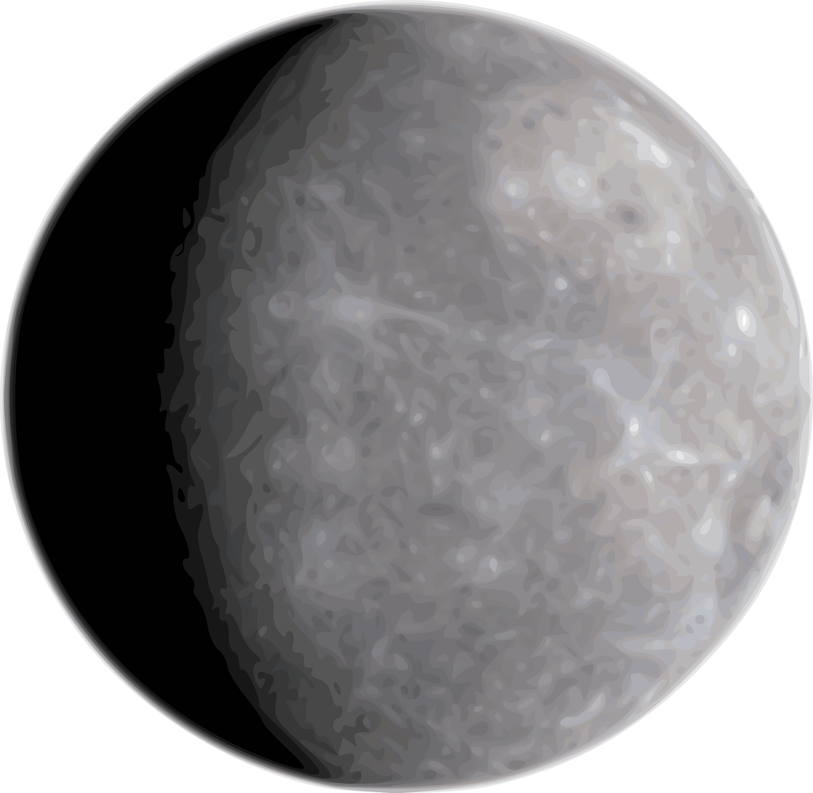
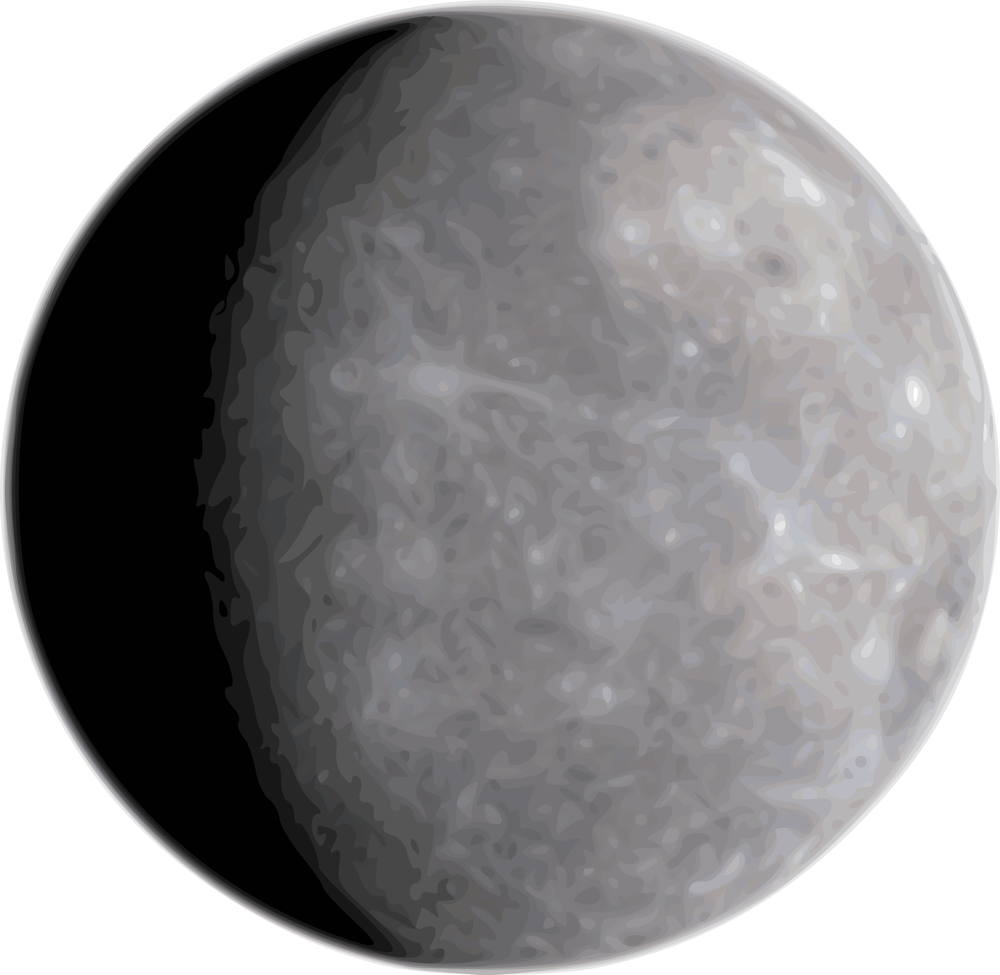

It is currently the only known location where life is present.The name “Earth” – is at least 1.000 years old, and it is a Germanic word which simply translates to “the ground.” Earth is the third planet from the Sun, at a distance of 1 AU or 147 million km.It has an equatorial radius of 6.371 km and a polar radius of 6.356 km meaning it is not completely spherical but rather bulged at the equator due to rotation.The Earth has a diameter of 12.742 km.Around 71% of the surface is covered by water and 29% by land.
The water is 3% fresh and 97% salted. Of that 3% freshwater, over 2% is frozen in ice sheets and glaciers meaning that less than 1% is freshwater found in lakes, rivers, and the underground.The highest temperatures on Earth can reach up to more than 110 degrees Fahrenheit / 48 degrees Celsius, and the lowest around -126 degrees Fahrenheit / -88 degrees Celsius, maybe even lower.Earth has only one satellite – the Moon – and a couple of temporal artificial satellites.In regards to land, the continent of Asia covers about 30% of all the land, having around 60% of the world’s population.The atmosphere of Earth is composed of roughly 78% nitrogen, 21% oxygen, 0.97% argon and carbon dioxide and about 0.04% other gases and water vapor. The mixture of gases is commonly known as air.